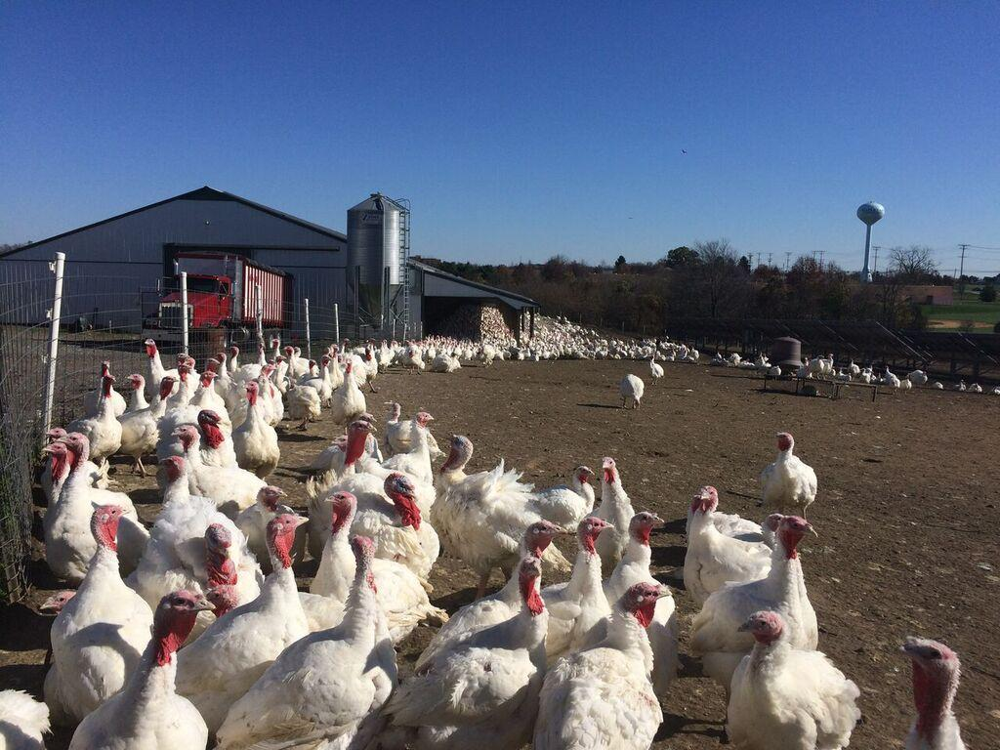
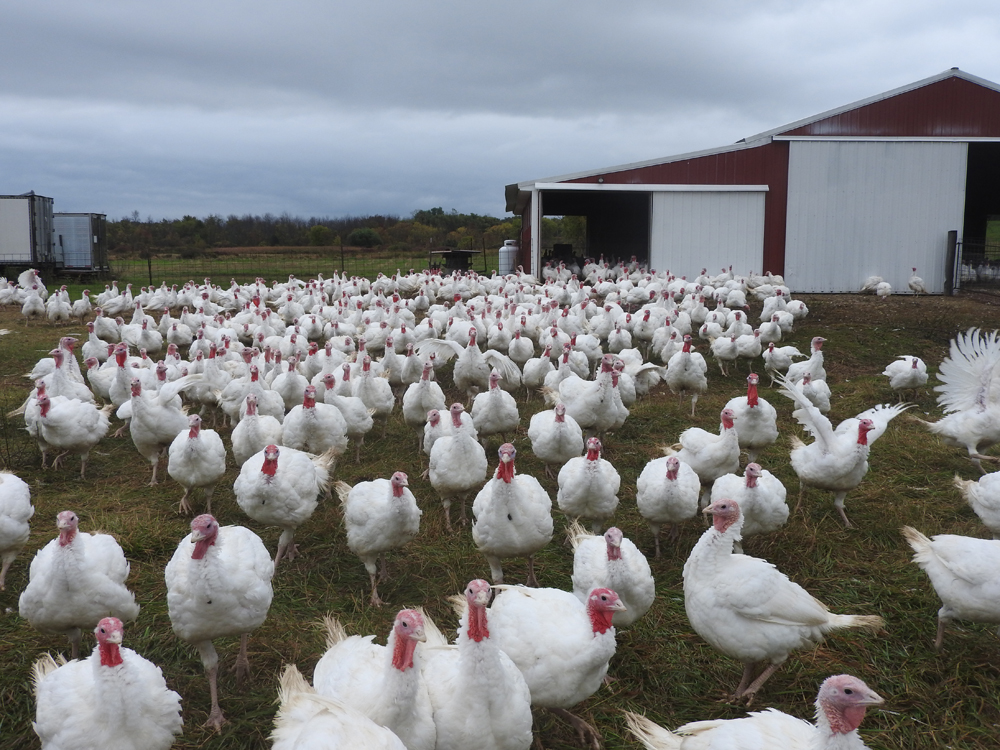
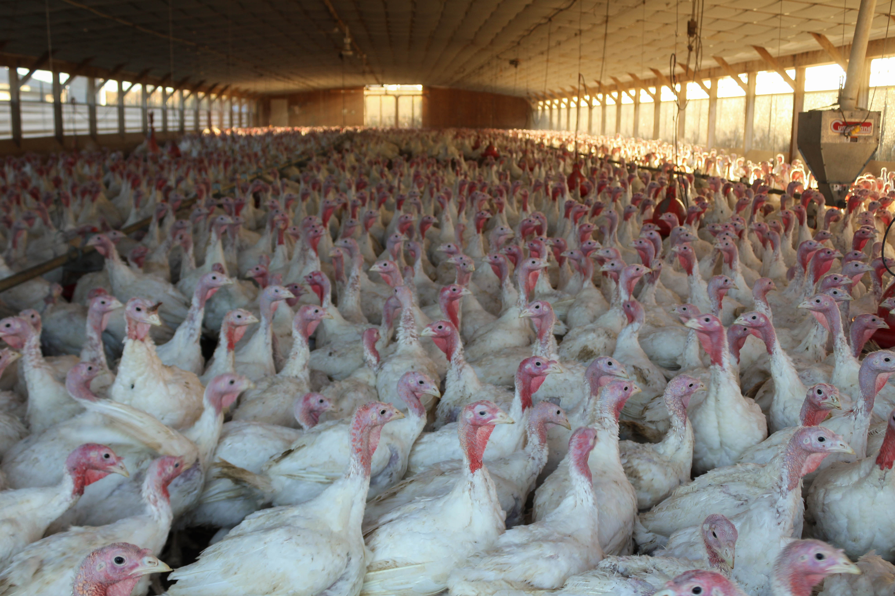
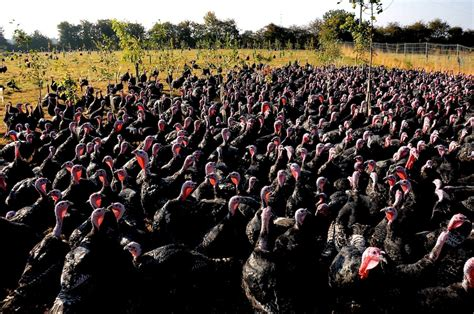
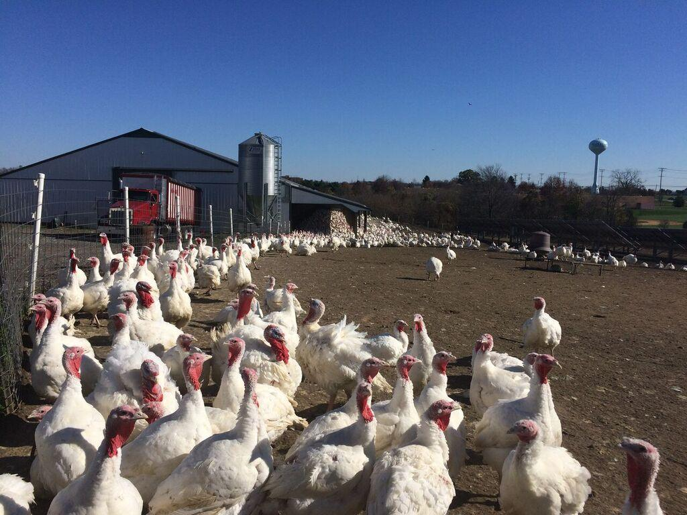
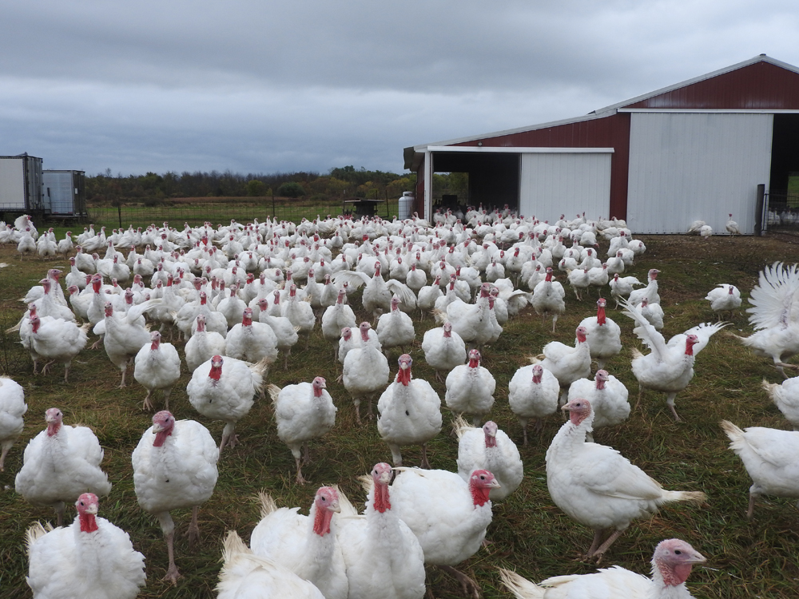
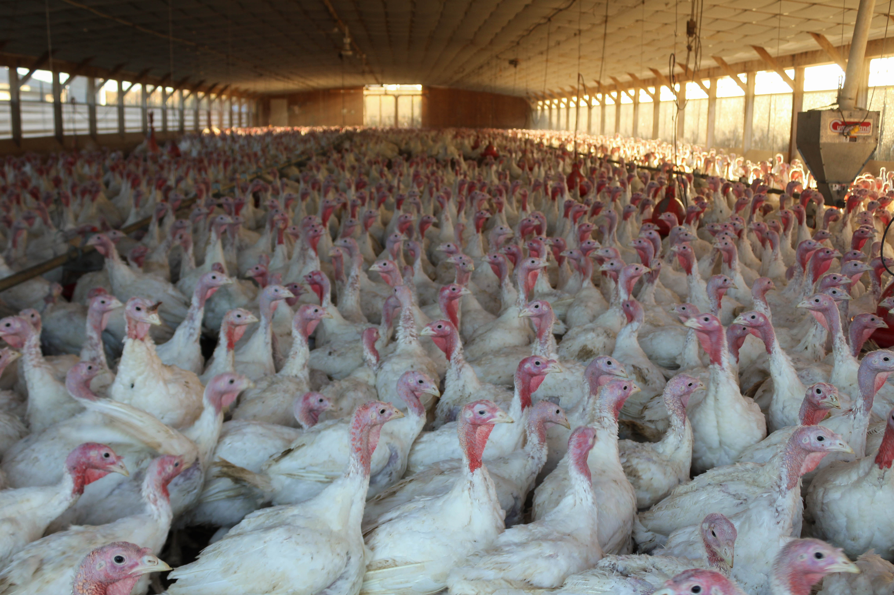
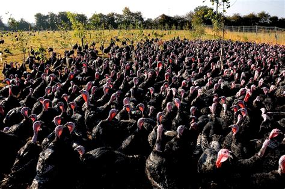

Welcome to The J.S Turkey Farm
 







We are a family-owned farm that has been raising turkeys for over 3 years. Our turkeys are raised in a natural environment and fed a healthy diet to ensure the highest quality meat. We offer a variety of turkey products, including whole turkeys, turkey chicks, and turkey eggs. Thank you for considering us for your Turkey products and holiday meals!
About Our Farm
It’s one of the farms in Kenya that specializes in the production of turkey chicks, mature turkeys, turkey eggs and turkey meat as the main turkey products being offered for sale. The farm was started in 2020 after the onset of the Corona virus in Kenya, and has been in operation since. The farm is located in Nyakach subcounty, Kisumu County. The farm sells the mature turkeys at 18 weeks old to slaughter houses and to individuals who visit the farm periodically to buy the birds either for their own local consumption or to domesticate them. The farm also sells the turkey chicks at 8 weeks old and sells the eggs which they may decide to keep for the continued production of the turkey birds by setting them into the incubator or by serving them to the female turkeys where the natural brooding takes place and chicks are hatched.
Our Products
- Turkey🦃 Feathers
- Turkey🦃 Manure
- Turkey🦃 Bones
- Turkey🦃 Meat
- Turkey🦃 Chicks
- Turkey🦃 Eggs
- Mature Turkey🦃 Birds
Below is a list of turkey meat offered for sale at the shop and their prices.

| TYPE OF TURKEY MEAT | STATUS | PRICE |
|---|---|---|
| BONE IN BREAST | AVAILLABLE | KSH 800.00 |
| BONELESS BREAST | KSH 950.00 | |
| GROUND | KSH 650.00 per KG | |
| LEG(DRUMSTICK) | KSH 250.00 per Piece | |
| THIGH | KSH 300.00 per Piece | |
| WING | KSH 150.00 per Piece | |
| WHOLE BIRD | KSH 1200.00 |
| TYPE OF TURKEY PRODUCT | STATUS | PRICE |
|---|---|---|
| TURKEY FEATHERS | AVAILLABLE | KSH 200.00 per 50 KG |
| TURKEY MANURE | KSH 750.00 per 50 KG | |
| TURKEY BONES | KSH 550.00 per 50 KG | |
| TURKEY CHICKS(8weeks old) | KSH 1500.00 per bird | |
| TURKEY EGGS | KSH 1200.00 per crate | |
| MATURE MALE TURKEY | KSH 2500.00 | |
| MATURE FEMALE TURKEY | KSH 2000.00 |
Contact Us
Phone: 0790842780
Email: jsturkeyfarm@gmail.com
Address: 0100-200 Nakuru